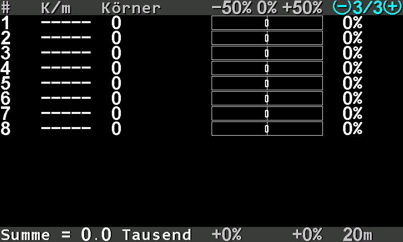

System nach der Installation prüfen
Ein einmaliger Ablauf für den Installateur — Schritt für Schritt nachweisen, dass jedes Gerät antwortet, jeder Kornsensor in seiner eigenen Reihe sitzt und die Maschine richtig anzeigt, und das Ergebnis festhalten.
Führen Sie diese Prüfung einmal durch, wenn das Panel und die Geräte montiert und angeschlossen sind. Jeder Schritt sagt, was Sie tun, und was der Bildschirm zeigen muss. Liefert ein Schritt nicht das Ergebnis, sagt die letzte Spalte der Tabelle am Ende, wohin Sie gehen.
Ihre Maschine hat möglicherweise nicht jedes Gerät — überspringen Sie die Schritte für das, was sie nicht hat. Bleiben Sie auf der Ebene „Fahrer“: Alarmfenster werden nur dort gezeigt (Zugriffsebenen).
Die Prüfung
Profil und Geräte prüfen. Schalten Sie das Panel ein und warten Sie auf den Startbildschirm. Es darf kein Alarm „Verbindung weg“ erscheinen, keine weiße Anzeige mit Ausrufezeichen und keine rote Anzeige mit einem X. Vergleichen Sie das Profil mit der Maschine: die Geräte und die Anzahl jedes Geräts (Das Profil). Öffnen Sie dann den Statusbildschirm jedes Sensors (Sensoreinstellungen) und blättern Sie mit „PLUS“ durch alle. Jeder Sensor zeigt „Verbindung:“ „Normal“; jeder Kornsensor zeigt Status: Betrieb. Siehe Der Sensor-Statusbildschirm.
Eine weiße Anzeige ist nur bei einem Gerät richtig, das nicht zu Ihrer Lieferung gehört (Das Profil).
Prüfen, dass jeder Kornsensor in seiner eigenen Reihe sitzt. Öffnen Sie mit „HOME“ den Bildschirm Tabelle und die Tabelle mit den Kornzählern (Der Bildschirm Tabelle). Sie zeigt die Anzahl der Körner; lesen Sie die Zahl dort ab, nicht auf der Ansicht mit Körnern je Meter, die nur Werte zeigt, solange sich die Maschine bewegt. Setzen Sie die Werte zurück (Werte des Bildschirms Tabelle zurücksetzen). Lassen Sie von Hand einige Körner durch das Saatrohr von Reihe 1 fallen; statt Körnern können Sie auch einen beliebigen kleinen Gegenstand, zum Beispiel einen langen Kabelbinder, mehrmals durch das Saatrohr führen – jeder Durchgang wird gezählt. Nur die Zeile der Sektion 1 darf reagieren. Machen Sie dasselbe mit Reihe 2 und dann nacheinander mit jeder weiteren Reihe. Ein Sensor, der in einer anderen Reihe reagiert, ist in der falschen Reihenfolge angeschlossen — rufen Sie Ihren Installationspartner oder den Service-Support an.

Die Kornzähler-Tabelle eines Achtreihen-Einzelkornsägeräts: Körner je Sektion, Abweichungsbalken, Summe. Das Zählen prüfen. Nur wenn Ihr Bildschirm Tabelle die Kornzähler-Tabelle hat. Setzen Sie die Werte erneut zurück. Lassen Sie eine bekannte Anzahl Körner, zum Beispiel 20, durch ein Saatrohr fallen. Lesen Sie die Zahl dieser Sektion in der Kornzähler-Tabelle ab, die die Anzahl der Körner zeigt. Bei einer Einzelkornsämaschine stimmt sie bis auf ein Korn mit der Anzahl überein, die Sie fallen ließen, sofern die „Fraktion“ der Kornsensoren auf die Größe des Korns eingestellt ist. Ist die Zahl deutlich höher – bis zum Doppelten der Anzahl –, ist die Fraktion für dieses Korn zu klein eingestellt: Ein großes Korn, zum Beispiel Mais, wird dann als zwei gezählt; stellen Sie die Fraktion nach der Tabelle in Korn- und Düngersensoren ein. Weichen beide anders ab, notieren Sie beide Zahlen und geben Sie sie an den Support weiter (Bevor Sie den Support kontaktieren).
Den Arbeitsstellungssensor prüfen. Nur wenn die Maschine einen hat. Heben Sie das Gerät an und senken Sie es dann ab. Der Statusbildschirm des Sensors muss zwischen Position: Transport und Position: Arbeit wechseln. Zeigt er das Gegenteil, ist die Einstellung „Signal Transportstellung“ des Sensors verkehrt herum (Behälter-, Arbeitsstellungs- und Motorsensoren).
Die Geschwindigkeit prüfen. Fahren Sie. Das Geschwindigkeitsfeld auf dem Startbildschirm muss eine Zahl in Weiß zeigen. XX.X in Rot heißt, dass das Eingangsgerät des Geschwindigkeitssensors nicht antwortet. Eine gelbe Zahl im Wechsel mit „SIMULIERT“ heißt, dass die Geschwindigkeit simuliert und nicht gemessen wird. „LANGSAMER“ und „SCHNELLER“ sagen nur, dass Sie außerhalb des zulässigen Bereichs fahren (Anzeigen des Startbildschirms). Passt die Zahl nicht zur wirklichen Geschwindigkeit, kalibrieren Sie den Sensor (Geschwindigkeitssensor kalibrieren). Fällt der Sensor aus, siehe Arbeiten ohne Geschwindigkeitssensor.
Die übrigen Sensoren der Maschine prüfen. Je eine kurze Prüfung:
- Behältersensor. Sein Statusbildschirm zeigt Pin: und den Pegel, „0“ oder „1“. Bei gefülltem Behälter darf das Panel „Behälter leer“ nicht auslösen (Behälter leer).
- Gebläsesensor. Bei laufendem Gebläse zeigt sein Statusbildschirm F= in Hz und keinen Alarm „Drehzahl zu niedrig“ oder „Drehzahl zu hoch“ (Gebläsesensor).
- Drucksensor. Bei laufendem Gebläse zeigt sein Statusbildschirm P= in kPa und keinen Alarm „Druck hoch“ oder „Niedriger Druck“ (Drucksensor).
- Dosierwellensensor. Drehen Sie die Welle. Sein Statusbildschirm zeigt F= in Hz und keinen Alarm „Kein Lauf“ (Dosierwellensensor).
- Spuranzeigersensoren. Jeder zeigt auf seinem Statusbildschirm „Verbindung:“ „Normal“ (Spuranzeigersensoren).
- Fahrgassen-Aktuator. Sein Statusbildschirm zeigt Status: Eingezogen, Ausgefahren oder Betrieb — nicht Unbekannt (Fahrgassen-Aktuator).
Das Ergebnis festhalten.
- Die Firmware-Version. Drücken Sie auf dem Startbildschirm „MENU“ und wählen Sie im Hauptmenü „Information“. Das Fenster zeigt die Firmware-Version. Notieren Sie sie.
- Notieren Sie das Datum, die Maschine und die Reihenzahl.
- Fotografieren Sie den Statusbildschirm eines Sensors oder der Sensoren nacheinander, mit „Verbindung:“ „Normal“.
Bewahren Sie die Notizen und die Fotos auf. Sie brauchen sie, wenn Sie den Support kontaktieren müssen (Bevor Sie den Support kontaktieren).
Wenn ein Schritt fehlschlägt
| Schritt | Was Sie sehen | Wohin |
|---|---|---|
| 1 | „Verbindung weg“ oder „Keine Verbindung“ | Beliebiges Gerät: Verbindung weg oder falscher Gerätetyp |
| 1 | „Falscher Gerätetyp!“ | Beliebiges Gerät: Verbindung weg oder falscher Gerätetyp |
| 1 | Weiße Anzeige bei einem Gerät, das Sie haben | Sensor in die Überwachung nehmen oder herausnehmen |
| 1 | „Verstopft“, „Fremdlicht“, „Defekt“ | Korn- oder Düngersensor verstopft, von Fremdlicht getroffen oder defekt |
| 1 | Gerät fehlt im Profil | Das Profil |
| 2, 3 | Falsche Reihe reagiert, oder die Zahl weicht ab | Bevor Sie den Support kontaktieren |
| 4 | Stellung wechselt nicht oder ist vertauscht | Behälter-, Arbeitsstellungs- und Motorsensoren |
| 5 | Keine oder falsche Geschwindigkeit | Alarme des Geschwindigkeitssensors, Geschwindigkeitssensor kalibrieren, Arbeiten ohne Geschwindigkeitssensor |
| 6 | Behälter, Gebläse, Druck, Dosierer | Behälter leer, Gebläse und Dosierwelle: Drehzahlalarme, Luftdruck zu hoch oder zu niedrig |
Ihre Maschine tut etwas, das diese Seite nicht beantwortet? Schreiben Sie an support@agriwelt.com — es antwortet ein Ingenieur.